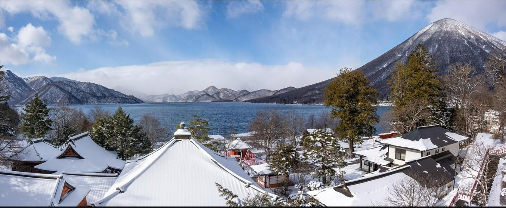

Winter Escape
Japan
2026 — 2027
26 ธันวาคม 2569 – 2 มกราคม 2570 · 8 วัน 7 คืน · ผู้เดินทาง 7 คน
หิมะรอเราอยู่! — 8 วัน 7 คืน จากนิกโก้ถึงโตเกียว




ทริปนี้ไม่ย้อนเส้นทาง นาริตะ → นิกโก้ → เอจิโกะ-ยูซาวะ → โตเกียว → นาริตะ เป็นวงเดียวจบ ไม่มีวันไหนที่ต้องนั่งรถซ้ำทางเดิม
สองช่วงที่ปกติมีแต่รถบัส คือขึ้นเขาโอคุนิกโก้และเข้าคิโยสึ เปลี่ยนเป็นเหมาจัมโบ้แท็กซี่ 9 ที่นั่ง รถรอตลอดวัน ไม่ต้องยืนรอกลางหิมะ
คืนส่งท้ายปีอยู่ที่เอจิโกะ-ยูซาวะ เมืองออนเซ็นที่หิมะตกเกือบทุกวันในเดือนธันวาคม ไม่ใช่นับถอยหลังกลางเมืองใหญ่
ลงเครื่องเช้า นั่งรถไฟตรงเข้าอาซากุสะ ไหว้วัดเซนโซจิ แล้วต่อรถไฟด่วนขึ้นเขาไปนิกโก้ ปิดท้ายที่สะพานแดงชินเคียวก่อนฟ้ามืด 16:31
เหมารถขึ้นโอคุนิกโก้ทั้งวัน น้ำตกเคกงที่เริ่มจับน้ำแข็ง ทะเลสาบชูเซนจิที่เรือหยุดวิ่ง และยูโนโกะที่กลายเป็นลานน้ำแข็ง จบด้วยออนเซ็นกลางหิมะ
เช้าเดินศาลเจ้าโทโชกุในหิมะ บ่ายนั่งชินคันเซ็นสองต่อข้ามเทือกเขาไปโผล่ที่เอจิโกะ-ยูซาวะ เมืองหิมะหนาที่สุดของญี่ปุ่น
ชินคันเซ็นหนึ่งป้ายถึงสถานีที่เปิดเฉพาะหน้าหนาว ขึ้นกระเช้าสู่ยอดเขา 1,180 เมตร เล่นหิมะทั้งวันโดยไม่ต้องเล่นสกีก็ได้
เหมารถเข้าหุบเขาคิโยสึ เดินอุโมงค์ยาว 750 เมตรไปโผล่ที่บ่อน้ำสะท้อนหน้าผาหิมะ จุดถ่ายรูปที่โด่งดังที่สุดของนีงาตะ
เดินเมืองออนเซ็นทั้งวัน แช่น้ำร้อนรอบสอง กินโทชิโคชิโซบะตามธรรมเนียมส่งท้ายปี แล้วนับถอยหลังกลางหิมะ
กลับโตเกียวเช้า บ่ายไปต่อแถวไหว้พระวันแรกของปีที่วัดเซนโซจิพร้อมคนญี่ปุ่นทั้งเมือง ค่ำลงตรอก Hoppy Street

เช้าเดินชินจูกุ กลางวันยากิโทริในตรอกโอโมอิเดะโยโกโจ แล้วนั่งรถไฟตรงกลับสนามบินนาริตะ


| ช่วง | ระยะทาง | เวลา | เดินทางโดย | วัน |
|---|---|---|---|---|
| กรุงเทพฯ (BKK) → นาริตะ (NRT) | ~4,600 กม. | 6 ชม. | เครื่องบินตรง | วันที่ 1 |
| สนามบินนาริตะ → อาซากุสะ | 68 กม. | 1 ชม. | Keisei Access Express | วันที่ 1 |
| อาซากุสะ → Tobu-Nikko | 135 กม. | 1 ชม. 50 น. | Tobu Limited Express (จองที่นั่ง) | วันที่ 1 |
| นิกโก้ → โอคุนิกโก้ (วนทั้งวัน) | ~70 กม. รวม | ~3 ชม. รวม | จัมโบ้แท็กซี่เหมาทั้งวัน | วันที่ 2 |
| Tobu-Nikko → JR Nikko → อุตสึโนะมิยะ | 1 + 40 กม. | 5 น. + 45 น. | แท็กซี่ 2 คัน + JR Nikko Line | วันที่ 3 |
| อุตสึโนะมิยะ → โอมิยะ | 80 กม. | 25 น. | ชินคันเซ็น Tohoku | วันที่ 3 |
| โอมิยะ → Echigo-Yuzawa | 170 กม. | 55 น. | ชินคันเซ็น Joetsu (Toki) | วันที่ 3 |
| Echigo-Yuzawa → GALA Yuzawa (ไป-กลับ) | 2 กม. ต่อเที่ยว | 5 น. ต่อเที่ยว | ชินคันเซ็น 1 ป้าย + กระเช้า | วันที่ 4 |
| ยูซาวะ → Kiyotsu Gorge (ไป-กลับ) | 28 กม. ต่อเที่ยว | 35 น. ต่อเที่ยว | จัมโบ้แท็กซี่เหมาไป-กลับ | วันที่ 5 |
| Echigo-Yuzawa → อุเอโนะ | 200 กม. | 1 ชม. 15 น. | ชินคันเซ็น Joetsu (จองที่นั่ง) | วันที่ 7 |
| อุเอโนะ → อาซากุสะ | 3 กม. | 12 น. | Metro Ginza Line | วันที่ 7 |
| อาซากุสะ → ชินจูกุ (ไป-กลับ) | 12 กม. ต่อเที่ยว | 35 น. ต่อเที่ยว | Ginza Line + JR Chuo | วันที่ 8 |
| อาซากุสะ → สนามบินนาริตะ | 68 กม. | 1 ชม. | Keisei Access Express | วันที่ 8 |
| นาริตะ (NRT) → กรุงเทพฯ (BKK) | ~4,600 กม. | 6 ชม. 50 น. | เครื่องบินตรง | วันที่ 8 |
รวมระยะทางบนรางตลอดทริปประมาณ 790 กม. และบนจัมโบ้แท็กซี่อีกราว 130 กม. วันที่เดินทางหนักสุดคือวันที่ 3 (นิกโก้ → ยูซาวะ) อยู่บนรางรวม 2 ชม. 5 น. แต่ต้องเปลี่ยนขบวน 3 ต่อ ประตูถึงประตูราว 4 ชม. วันอื่นในเมืองเดินเป็นหลัก ส่วนใหญ่ไม่เกิน 1 กม. ต่อช่วง